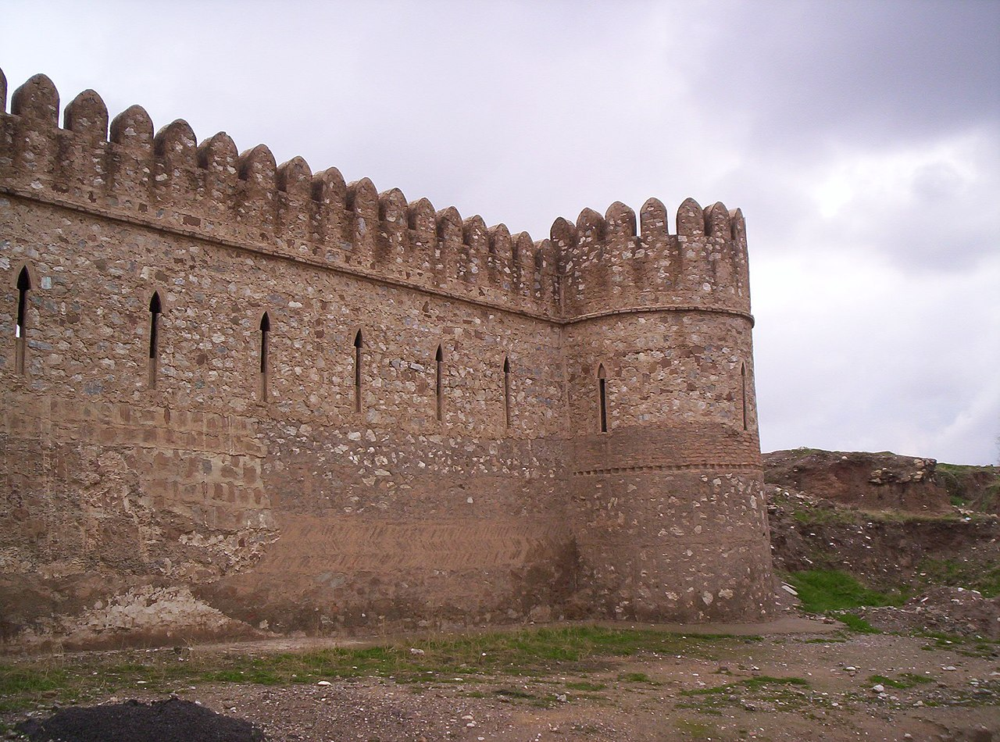
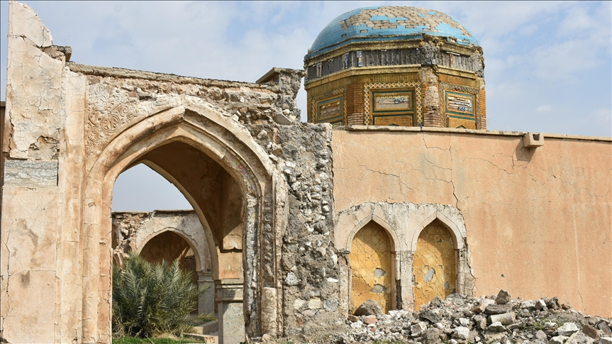
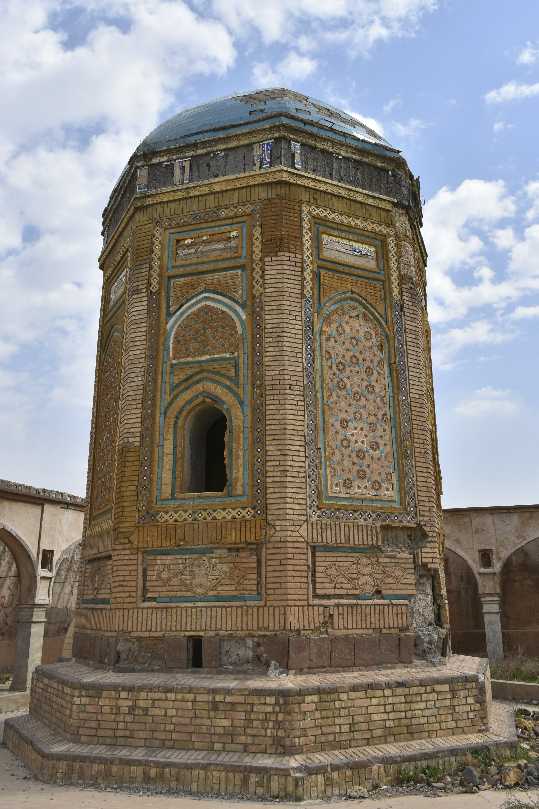

Kirkuk Castle

- The Kirkuk Citadel is in the centre of Kirkuk, Iraq, and is considered to be the oldest part of the city. The citadel stands on an artificial mound 130 feet high located on a plateau across the Khasa River.

- The historical Kirkuk Citadel, one of the most important symbols of Iraq’s northern Kirkuk province, is in danger of collapse due to natural events and years of neglect.
- Built in 884 BC, the citadel has been the cradle of many civilizations throughout history. It contains traces of the Seljuk and Ottoman periods and is waiting to be restored.

- Some parts of the castle, located in the center of the city, were destroyed during the Saddam regime in 1990. And Turkmen families, who were the first inhabitants of the region, were forcibly displaced.

- A large number of historical and religious sites still exist at the site, including monuments believed to be the tombs of prophets Daniel, Huneyin and Uzair.
- Historical artifacts in Iraq have been left to their fate for years because of the ongoing conflict, terrorist attacks and economic difficulties, researcher and author Aydin Kirkuk told Anadolu Agency.